Etape 3: La récompense
Grâce à la pollinisation, la reproduction sexuée des plantes est assurée. La pollinisation apporte aussi un avantage aux insectes : le nectar ou le pollen dont ils se nourrissent. La pollinisation est une relation mutualiste, c’est-à-dire que les deux partenaires y trouvent un avantage. Nectar et pollen sont parfois qualifiés de récompense pour appuyer sur le fait que les insectes aussi tirent bénéfice de la pollinisation. Le nectar n’a d’ailleurs pas d’autre fonction que d’attirer les insectes sur la fleur. Il est produit par des glandes appelées nectaires et que l’on peut rencontrer à différents endroits de la fleur.
La triche !
La relation mutualiste ne fonctionne pas toujours. Parfois un des deux partenaires est lésé. Certains bourdons ont une langue trop courte pour atteindre le nectar de certaines fleurs en forme de tube. Ils font alors un petit trou sur le côté de ce tube pour avoir accès au nectar par le côté de la fleur. Ils se nourrissent alors de nectar mais ne pollinisent pas la plante puisqu’en passant sur le côté, ils ne sont pas en contact avec le pollen. Les orchidées du genre Ophrys ne produisent pas de nectar. Leur labelle imite l’abdomen de femelle d’abeilles sauvages et émettent une odeur proche de celle des phéromones de ces mêmes femelles. Les mâles d’abeilles sauvages sont attirés par ces fleurs qui imitent leur femelle et se posent sur celle-ci en tentant de s’accoupler. Ils repartent avec des pollinies, des sacs de pollen sur la tête ou l’abdomen et tentent de s’accoupler avec d’autres fleurs. Ils pollinisent ainsi l’orchidée mais n’en retirent aucun bénéfice puisqu’ils n’y trouvent pas de nectar. Ils ne se nourrissent pas non plus de pollen. Les Ophrys ont une floraison précoce qui coïncide avec la période d’éclosion des jeunes mâles peu expérimentés. En effet après quelques accouplements déçus et surtout avec l’arrivée des femelles, ils ne visiteront plus ces fleurs à promesses non tenues.